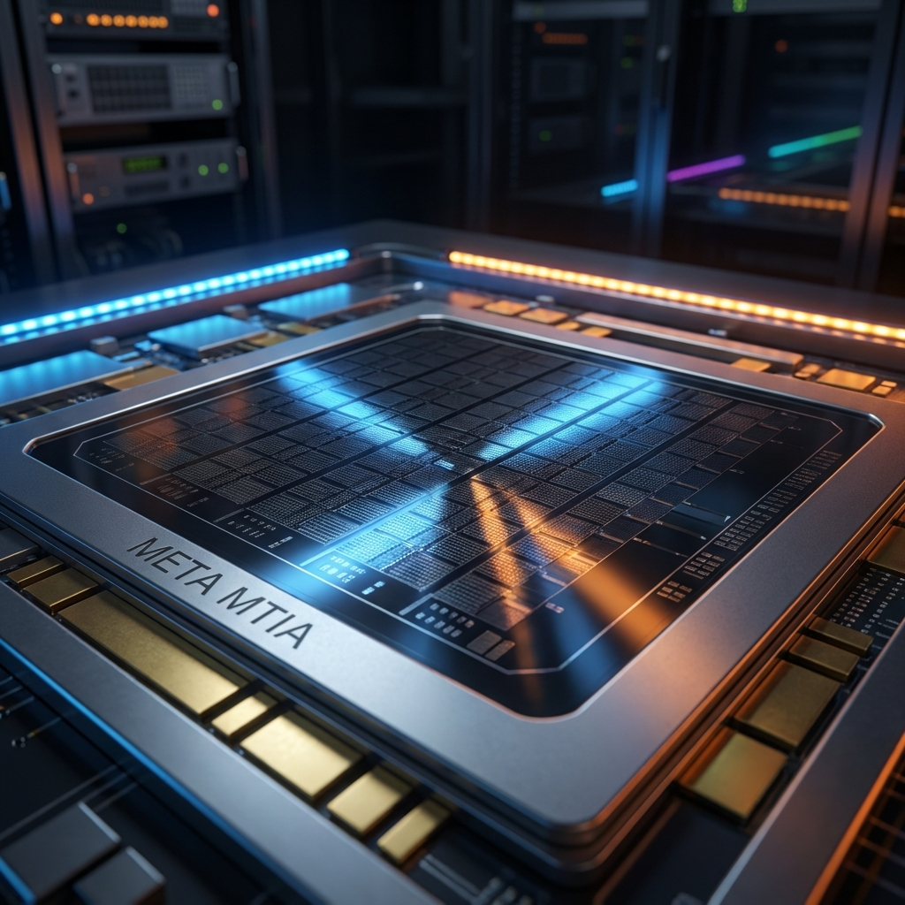

There's a moment in every tech giant's lifecycle when they realize renting someone else's infrastructure is a tax they no longer want to pay. For Meta, that moment arrived with a $40 billion annual compute bill and a growing suspicion that NVIDIA's margins were... let's call them "aspirational."
Enter the MTIA—Meta Training and Inference Accelerator—a family of custom silicon that's about to go from experimental curiosity to production weapon. And the roadmap? It's aggressive enough to make even the most caffeinated semiconductor analyst reach for another espresso.
The Silicon Express: Six-Month Cadence
Meta isn't playing the long game here. They're playing the relentless game. New MTIA generations are dropping every six months through 2027, each one building on a modular chiplet architecture that lets them swap out pieces without redesigning the whole chip. Think LEGO, but for data centers and with slightly fewer opportunities to step on a painful piece in the dark.
The modular approach is smart. It means Meta can iterate faster than traditional monolithic designs, responding to workload changes without the 18-24 month respin cycles that have plagued custom silicon projects since forever. When your ranking algorithms change weekly, your hardware needs to keep pace.

The Roadmap Breakdown
In production, quietly humming. The 300 series is already handling Meta's ranking and recommendation training workloads—the invisible engines that decide what 3+ billion people see in their feeds. It's not flashy, but it's already saving real money on inference costs.
Lab testing complete, now deploying. Here's where things get interesting: 5x compute performance over the 300, plus 50% more HBM bandwidth. That's not an incremental bump—that's a generational leap. The 400 is Meta's first serious attempt at handling more than just ranking models.
Mass deployment begins. Double the HBM bandwidth of the 400. This is the chip that starts eating into training workloads that currently go straight to NVIDIA clusters. If you're wondering when Meta becomes less dependent on H100s, circle this date.
The crown jewel. 50% more HBM bandwidth than the 450, 80% more HBM capacity. The full progression from 300 to 500 represents a 4.5x increase in memory bandwidth and a staggering 25x jump in compute FLOPS. That's not keeping up with NVIDIA—that's trying to lap them.
The Broadcom Factor
Meta isn't doing this alone. Broadcom is the silent partner here, providing the chiplet expertise and manufacturing relationships that let Meta focus on architecture rather than foundry negotiations. It's a pragmatic alliance—Broadcom gets a marquee customer, Meta gets silicon expertise without building it from scratch.
The partnership also gives Meta something precious: options. If TSMC's 3nm node gets constrained (and it will), Broadcom's relationships with alternative foundries provide flexibility that pure in-house designs might lack.
Software Is the Real Battlefield
Hardware without software is just expensive sand. Meta knows this, which is why MTIA comes with first-class support for PyTorch, vLLM, and Triton. They're not asking developers to learn a new stack—they're sliding their chips into existing workflows like a replacement engine that happens to get better mileage.
The PyTorch compatibility is particularly crucial. Meta is PyTorch in many ways—they built it, they maintain it, they know every optimization trick. MTIA chips can leverage that intimacy in ways generic accelerators simply can't match.
300 → 500
Improvement
Cadence
Completion
The Real Question: Can They Actually Do This?
Custom silicon roadmaps have a habit of looking beautiful in PowerPoint and disappointing in production. Google has spent years iterating on TPUs. Amazon's Trainium and Inferentia have had... mixed reception. The track record for hyperscalers building competitive AI chips is spotty at best.
But Meta has some advantages. Their workloads are narrower than general cloud providers—ranking, recommendation, content understanding. They don't need to beat NVIDIA at everything; they just need to beat them at the things Meta actually does. That's a much smaller target.
And then there's the money. With inference costs growing faster than revenue in some quarters, the economic case for custom silicon isn't theoretical—it's existential. Meta isn't building MTIA because it's interesting. They're building it because renting NVIDIA's empire is increasingly unaffordable.
What This Means for Everyone Else
If Meta succeeds—and that's still a capital-I If—it changes the dynamics of AI infrastructure. Other hyperscalers will accelerate their own silicon programs. NVIDIA's pricing power will face real pressure for the first time in years. The whole "AI requires NVIDIA" narrative starts to crack.
It also validates something smaller companies have suspected: vertical integration works. When you control the full stack—from chip to model to application—you can optimize in ways that generic platforms simply can't match. The trade-off is complexity, but the reward is efficiency.
By 2027, we'll know if Meta's gamble paid off. The MTIA 500 will either be the chip that broke NVIDIA's spell, or another cautionary tale about the difficulty of custom silicon. Either way, the next two years are going to be fascinating to watch.
One thing's certain: Jensen Huang is probably not sleeping quite as soundly as he was a year ago.